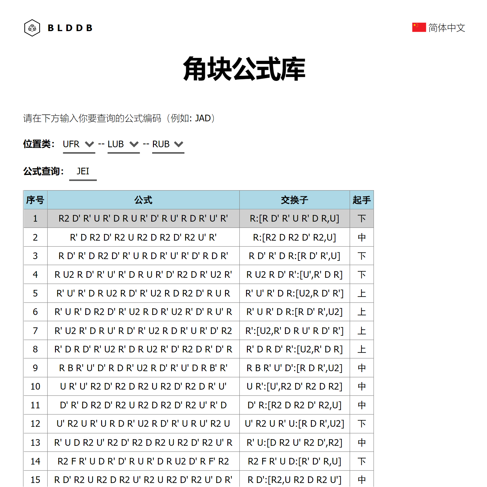
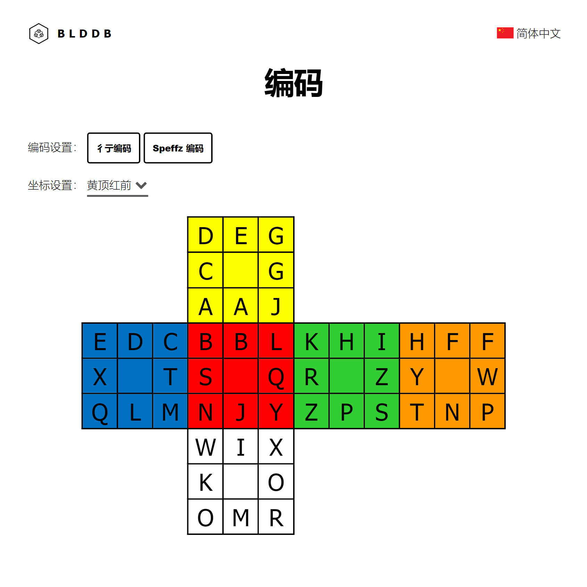

三盲公式库网站介绍
大家好，我是王子兴。在本文中，我将简要介绍我近期做的网站：三盲公式库 (blddb.net)。这是一个主要基于噩梦体系的三阶盲拧公式库，包含了角块三循环、角块翻色、棱块三循环、棱块翻色等数万条公式，兼容手机、电脑、平板等多种类型的设备，支持简体中文和英语两种语言。三盲公式库提供了多个备选公式，你可以自由地选择公式，从而定制出一套适合自己手法的公式集。
噩梦公式
在2020年初，王逸帆提出了噩梦公式的概念。噩梦公式，是指全右手操作的公式，同时保持左手自始至终中立放置。这样的公式可能会适当增加原来公式的步数，但好处就是可以消除两条公式左右换手所浪费的时间，从而增强公式的爆发力，提升速度。
功能介绍
目前，三盲公式库分为角块公式库、翻角公式库、棱块公式库、翻棱公式库、奇偶公式库、联想词库、编码、说明这8个模块。
角块公式库，翻角公式库和奇偶公式库
角块公式库，翻角公式库和奇偶公式库的所有公式都是由程序生成的符合噩梦体系的公式。每条公式都有一个从多方面进行评价的量化指标“等效步数”。例如，如果 D 和 D' 不是交替的，则公式会有更多的等效步数。步骤 D2 也会大幅增加等效步数（这就是为什么 [D2, R U R'] 排在第 7 位）。它们主要以噩梦版公式集为样本，通过模拟退火算法对权重值进行调整，使得整体上噩梦版公式集采用的公式在所有备选公式中的排序中尽量靠前。排序前18条的公式会被显示在网页上，其中灰色的是最新的噩梦版公式集采用的公式。
查询方式：一般而言，只要在公式查询右边的横线上输入要查询的公式编码即可，上面的位置类会自动生成。你也可以通过选择位置类的方式来查询。输入完毕后，网页会显示该状态排序前18条的公式以及对应的交换子形式和起手位置。
棱块公式库和翻棱公式库
棱块公式库和翻棱公式库大多都是一些传统公式和传统公式的衍生公式（例如镜像，U 和 U' 互换等）。这是因为在类似的体系和限制下，棱块每种状态的公式数比角块多很多，暂时无法做到像角块一样暴力搜索出全部解法。其中。排序暂时仅通过转动步数进行升序排列，排序前18条的公式会被显示在网页上，其中灰色的是最新的噩梦版公式集采用的公式。对于每个棱块三循环，用户可以输入 set up 来探索公式的新做法。
联想词库
联想词库为用户提供编码所对应的联想词表，使得词语的汉语拼音首字母为所查询的双字母。其中排序是按照词频降序排列，排在前100条的联想词会被显示在网页上，用户可以根据喜好选择适合自己的联想词。
编码
三盲公式库的默认编码是彳亍编码，已经预提供了彳亍编码和 Speffz 编码，可一键切换。其它编码体系的用户也可直接在编码网页上进行修改。用户还可以将盲拧坐标更改为自己的盲拧坐标。之后，便能使用自己的编码体系进行公式的查询了。
许可证
本项目采用 GPL-3.0 协议。网页模板由 HTML5 UP 在 CCA 3.0 协议下授权。
结语
在此，我要感谢国内外对三盲公式库提供想法与建议的盲拧爱好者们。特别要感谢王逸帆，噩梦公式的理念和噩梦版公式集是三盲公式库的重要基石。
欢迎你们将三盲公式库推荐给身边有需要的魔友，希望对三盲魔友们有所帮助！如果你对三盲公式库有任何想法、建议或需求，请随时告诉我。
最后编辑于2022年9月19日。